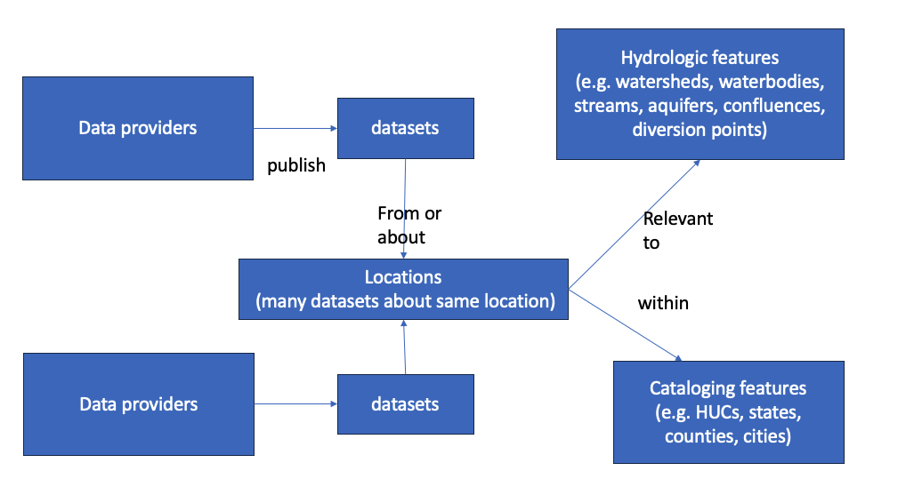

<script type="application/ld+json">
{
"@context": {
"@vocab": "https://schema.org/",
"ex": "https://example.com/schema/",
"locType": "https://www.opengis.net/def/schema/hy_features/hyf/HY_HydroLocationType"
},
"@id": "https://example.com/well/1234",
"@type": "schema:Place",
"name": "Well 1234",
"description": "Well at 1234 Place St., USA",
"locType": "well",
"subjectOf": {
"@id": "https://datasystem.org/dataset1",
"@type": "schema:Dataset",
"name": "Well Locations Dataset",
"ex:recordCount": 500
}
}
<script> 
Introduction
The Geoconnex project is about providing technical infrastructure and guidance to create an open, community-contribution model for a knowledge graph linking hydrologic features in the United States, published in accordance with Spatial Data on the Web best practices as an implementation of Internet of Water principles. The development of geoconnex.us takes place on GitHub. See here for the system of repositories.
Geoconnex will allow data users to answer questions like: “What datasets are available about the portions of Colorado River upstream of Hoover Dam within Nevada and Utah regarding variables discharge and total suspended solids with measurements taken at least daily with coverage between 2002 and 2007?” and be returned metadata for all relevant datasets from all participating organizations, including federal, state, private, and NGO organizations.
See https://geoconnex.us/demo for a mockup of data discovery and access workflows that https://geoconnex.us aspires to enable.
Geoconnex rests on data providers publishing metadata to the system. Thus, Geoconnex involves the publication of metadata within websites that describe water datasets and the real-world environmental features (eg rivers, wells, dams, catchments) or the cataloging features (eg government jurisdiction areas, statiscal summary reporting areas) that they are relevant to. This document provides guidance, including general principles as well as specific templates, for data providers for how to structure this metadata using the JSON-LD format.
Related materials, presentations, and publications
National Hydrography Infrastructure and Geoconnex
New Mexico Water Data Initiative including geoconnex.us
Roundtable presentation including geoconnex.us
Second Environmental Linked Features Interoperability Experiment
ESIP Sessions on Structured Data in the Web slides
Basic Information Model
The model used to organize information in the Geoconnex system is shown in Figure 1.

Data providers refer to specific systems that publish water-related datasets on the web. Many times a provider will simply be the data dissemination arm of an organization, such as the Reclamation Information Sharing Environment (RISE) of the US Bureau of Reclamation. Some organizations may have multiple data providers, such as US Geological Survey, which administers the National Water Information System as well as the National Groundwater Monitoring Network, among others. Some data providers are aggregators of other organizations’ data, such as the Hydrologic Information System of CUAHSI.
Datasets refer to specific collections of data that are published by data providers. In the context of Geoconnex, a single dataset generally refers to one that is collected from, or summarizable to, a specific spatial location on earth, as part of a specific activity. For example, a dataset would be the stage, discharge and water quality sensor data coming from a single stream gage, but not the collection of all stream gage readings from all stream gages operated by a given organization. A dataset could also be the time-series of a statistical summary of water use at the county level.
Locations are specific locations on earth that datasets are collected from or about, such as stream gages, groundwater wells, and dams. In the case of data that is reported at a summary unit such as a state, county, or hydrologic unit code (HUC), these can also be considered Locations. Conceptually, multiple datasets from multiple providers can be about the same Location, as might occur when a USGS streamgage and a state DEQ water quality sampling site are both located at a specific bridge.
Hydrologic features are elements of the water system that are related to locations. For example, a point may be on a river, which is within a watershed, and whose flow influences an aquifer. Each of these are distinct, identifiable features which many Locations are hydrologically related to, and which a user of a given dataset might also want to use.
Cataloging features are areas on earth that commonly group datasets. They are a superset of summary features such as HUCs, counties and states. For example, a state-level dataset summarizing average annual surface water availability would not have states as a cataloging feature. However, streamgage is within a state, county, HUC, congressional district, etc and may be tagged with these features in metadata, and thus be filtered alongside other streamgages within the same state.
This Geoconnex guidance concerns how to explicitly publish metadata that describes Datasets how they are related to each of the other elements of the information model.
JSON-LD
JSON-LD is a version of JSON, the popular data exchange format used by web APIs, to express linked data. Linked Data is an approach to data publication that allows data from various sources to be easily integrated. JSON-LD accomplishes this by mapping terms from a source data system to a machine-readable definition of that term available on the web, allowing different attribute names from different data sources to be consistently interpreted together. Commonly, JSON-LD is embedded within websites, allowing search engines and applications to parse the information available from web addresses (URLs). For an in-depth exploration and multimedia resources, refer to the JSON-LD official site and its learning section. JSON-LD documents should be embedded in the HTML of websites using script headers. A brief overview of the JSON-LD format follows below.
Below is an example JSON-LD document as embedded in a <script> division within a <head> or <body> section of an HTML page, with an explanation of its major elements.
<script type="application/ld+json">, <script> These are immutable HTML elements that tell machines to interpret everything between them as JSON-LD.
@context The @context keyword in JSON-LD sets the stage for interpreting the data by mapping terms to IRIs (Internationalized Resource Identifiers). By doing so, properties and values are clearly defined and identified. Our updated example has two contexts:
@vocab: Sets the default document vocabulary tohttps://schema.org/, which is a standard vocabulary for web-based structured data. This means that in general, attributes in the document will be assumed to havehttps://schema.org/as a prefix, so JSON-LD parsers will mapnameto https://schema.org/nameex: This is a custom context prefix representinghttps://example.com/schema/, signifying specific extensions or custom data definitions specific to our website. The prefix can be used on other attributes so that JSON-LD parsers do the appropriate mapping. Thus,ex:namewill be parsed ashttps://example.com/schema/recordCount.locType: This is a custom direct attribute mapping, specifying that this attribute exactly matches to the concept identified by this HTTP identifier https://www.opengis.net/def/schema/hy_features/hyf/HY_HydroLocationType. Using this direct mapping approach allows data publishers to map their arbitrary terminology to any publicly accessibly and well-identified standard term.
@id The @id keyword furnishes a uniform resource identifier (URI) for subjects in the JSON-LD document, enabling the subjects to be interconnected with data elsewhere. In this example:
- Well 1234 has the identifier
https://example.com/well/1234. - The dataset that it is about, “Well Locations Dataset”, has its unique identifier as
https://datasystem.org/dataset1.
@type The @type keyword stipulates the type or nature of the subject or node in the JSON-LD. It aids in discerning the entity being depicted. In the given context:
- Well 1234 is specified as a “Place” from the schema.org vocabulary (
schema:Place). - Well Locations Dataset’s type is a “Dataset” from the schema.org vocabulary (
schema:Dataset).
Nodes Nodes represent entities in JSON-LD, with each entity having properties associated with it. In the example:
- The main node is Well 1234, possessing properties like “name”, “description”, “locType”, and “subjectOf”.
- subjectOf property itself is a node representing a dataset that is about Well 1234. Apart from the “name” property, the dataset now also has a property called “ex:recordCount” (using the
ex:prefix from@context) indicating the number of rows in the dataset. This extension showcases the flexibility and strength of JSON-LD, where you can seamlessly integrate standard vocabulary with custom definitions, ensuring rich and well-structured interconnected data representations. Below, you can see how JSON-LD tools would parse and standardize the JSON-LD in the example.
Geoconnex JSON-LD elements
A Geoconnex JSON-LD document should be embedded in a human-readable website that is about either a Location or a Dataset. Documents about Locations should ideally include references to relevant Hydrologic Features, Cataloging Features, and Datasets. Documents about Datasets must include references to relevant Reference Monitoring Locations, Hydrologic Features and/or Cataloging Features.
Context
Geoconnex JSON-LD documents can have varying contexts. However, there are several vocabularies other than schema.org that mqy be useful, depending on the type of location and dataset being described and the level of specificity for which metadata is produced by the data provider. The example context below can serve as general-purpose starting point, although simpler contexts may be sufficient for many documents:
"@context": {
"@vocab": "https://schema.org/",
"rdfs": "http://www.w3.org/2000/01/rdf-schema#",
"dc": "http://purl.org/dc/elements/1.1/",
"qudt-units": "http://qudt.org/vocab/unit/",
"qudt-quantkinds": "http://qudt.org/vocab/quantitykind/",
"gsp": "http://www.opengis.net/ont/geosparql#",
"odm2var":"http://vocabulary.odm2.org/variablename/",
"odm2varType": "http://vocabulary.odm2.org/variabletype/",
"hyf": "https://www.opengis.net/def/schema/hy_features/hyf/",
"skos": "https://www.opengis.net/def/schema/hy_features/hyf/HY_HydroLocationType",
"ssn": "http://www.w3.org/ns/ssn/",
"ssn-system": "http://www.w3.org/ns/ssn/systems/"
}rdfsis a general vocabulary for basic relationshipsdcis the Dublin Core vocabulary for general information metadata attributesqudt-unitsprovides standard identifiers for units (e.g. cubic feet per second)qudt-quantkindsprovides ids for general phenomena (e.g. Volume flow rate) which may be measured in various unitsgspprovides ids for spatial relationships (e.g. intersects)odm2varis a supplement toqudt-quantkinds, and includes ids for many variables relevant to water science and management (e.g. turbidity)odm2varTypeis a supplement toodm2varthat includes ids for large groupings of variables (e.g. Water Quality)hyfprovides ids for surface water hydrology concepts (e.g. streams)skosprovides general properties for relating different concepts (e.g. broader, narrower, exact Match)ssnandssn-systemprovide ids for aspects of observations and measurement (e.g. measurement methods)
Reference Features
Embedding links to URIs of Reference Features are the best way to ensure that your data can be related to other data providers’ data. URIs for reference features are available from the Geoconnex reference feature server. Reference features can be one of three types:
- Monitoring Locations which are common locations that many organizations might have data about such as a streamgage station e.g. https://geoconnex.us/ref/gages/1143822
- Hydrologic Features which are common specific features of the hydrologic landscape that many organizations have data about. These could include confluence points, aquifers, stream segments and river mainstems and named tributaries, e.g. https://geoconnex.us/ref/mainstems/29559.
- Cataloging Features which are larger area units that are commonly used to group and filter data, such as HUCs1, states2, counties3, PLSS grids, public agency operating districts, etc.
Depending on what kind of resource i.e. (location or dataset) and the level of metadata you have available to publish, you can use different elements of the @context or use Reference Features in various ways. Below we will work through creating a JSON-LD document depending on your situation.
There are two basic patterns to think about:
Location-orientedA system of location-oriented webpages that include a catalog of datasets about the location for that page. The Monitor My Watershed Site pages published by are an example of this pattern. At this page, one finds a variety of information about a specific location, such as that location’s identifier and name and a map of where it is. In addition there is information about which continuous sensor and field water quality sample data are available about the location, and links to download these data.Dataset-orientedA system of dataset-oriented webpages that tag which locations are relevant to the dataset described at a given page. This dataset record published on CUAHSI’s Hydroshare platform is an example, where there is a “Related Geospatial Features” section that explicitly identifies several features that the dataset has data about.
Organizational Monitoring Features
Surface Water
Groundwater
Non-hydrological
Datasets
Variables
Temporal Extent
Temporal Resolution
discrete timeseries * regular * irregular
ssn-system: frequency
Data generation process
Spatial extent and resolution (gridded data only)
Provenance
Data access
Complete Examples
Monitoring location page (minimal)
Monitoring location page (full)
Dataset (minimal)
Dataset (full)
Future work
Fully semantic data
[1] 4The echo: false option disables the printing of code (only output is displayed).